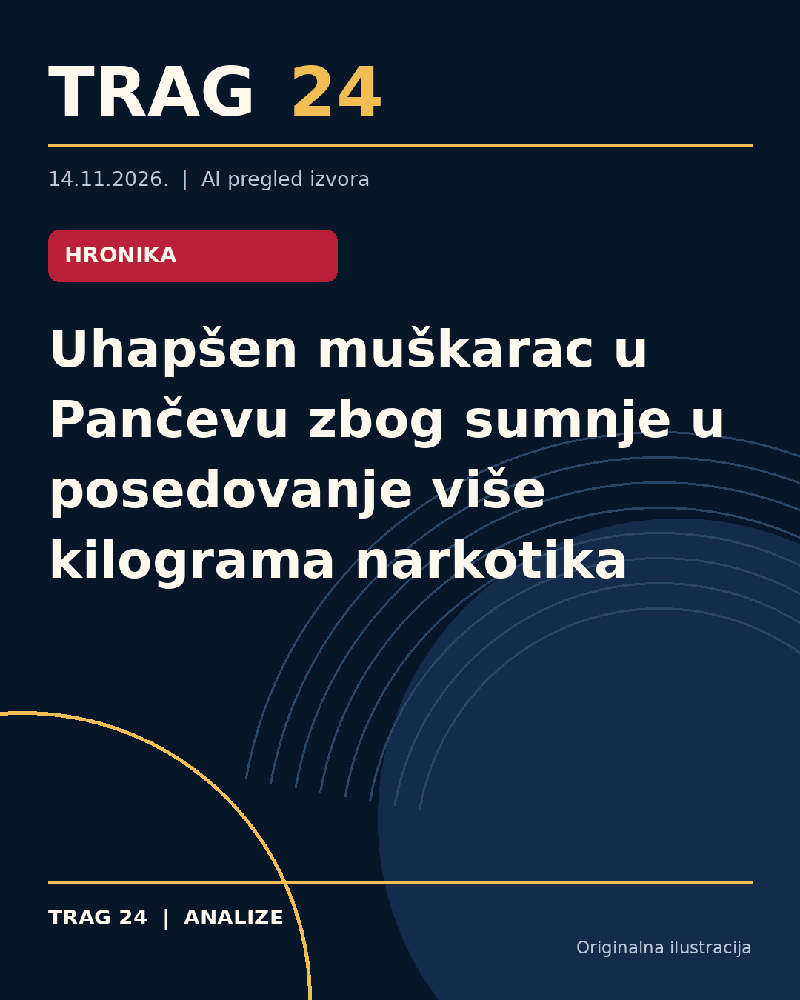

Uhapšen muškarac u Pančevu zbog sumnje u posedovanje više kilograma narkotika

ŠTA SE DOGODILO
Policija u Pančevu uhapsila je 30-godišnjeg muškarca inicijala N.G. iz okoline grada zbog sumnje da je počinio krivično delo neovlašćena proizvodnja i stavljanje u promet opojnih droga. Prilikom pretresa stana i drugih prostorija koje osumnjičeni koristi, pronađeno je više kilograma materije za koju se sumnja da su droga, uključujući marihuanu, amfetamin i kokain.
HRONOLOGIJA
Nakon prikupljanja operativnih saznanja, pripadnici Ministarstva unutrašnjih poslova u Pančevu izvršili su pretres stana osumnjičenog. Po nalogu Višeg javnog tužilaštva u Pančevu, osumnjičenom je određeno zadržavanje do 48 časova, nakon čega će, uz krivičnu prijavu, biti priveden tužiocu. Informacije o konkretnoj datumu hapšenja nisu objavljene u dostupnim izvorima.
ŠTA NAVODE IZVORI
Svi izvori koje smo koristili (Blic, Telegraf i N1) navode da je prilikom pretresa pronađeno oko 3.500 grama biljne materije za koju se sumnja da je marihuana, oko 4.100 grama praškaste materije za koju se sumnja da je amfetamin i oko 135 grama materije za koju se sumnja da je kokain. Takođe, N1 ističe da je pronađena i digitalna vaga, što može ukazivati na distribuciju droge. Hapšenje je potvrđeno od strane Policijske uprave Pančevo i Višeg javnog tužilaštva.
ŠTA JE POTVRĐENO
Potvrđeno je hapšenje N.G. (30) zbog osnovane sumnje u krivično delo neovlašćene proizvodnje i stavljanja u promet opojnih droga. Pronađena je veća količina narkotika različitih vrsta (marihuana, amfetamin i kokain). Određeno je zadržavanje do 48 sati nakon čega će osumnjičeni biti priveden tužiocu. Ove informacije stižu direktno iz saopštenja MUP-a Pančevo i Višeg javnog tužilaštva.
ŠTA NIJE POTVRĐENO
Nije potvrđeno kakav je tačan vremenski okvir ovog događaja niti detalji o navodnim mestima nabavke ili distribucije narkotika. Takođe, iz dostupnih tekstova nije poznato da li je osumnjičeni dao bilo kakve izjave ili odbranu. Identitet osumnjičenog iznosi se samo inicijalima (N.G.) bez dodatnih ličnih podataka.
ŠTA OSTАJE OTVORENO: Ostaje nepoznato da li je osumnjičeni do sada imao slične prijave, kao i koji su dalji koraci u istrazi nakon predaje tužiocu. Takođe nije poznato da li je zadržavanje na kraju dovelo do podizanja optužnice ili nekih drugih merila pravne reagovanja. Detalji o tome šta će biti sa zaplenjenim materijama takođe nisu dostupni.
Izvori
- https://www.blic.rs/vesti/hronika/hapsenje-u-pancevu-kod-30-godisnjaka-pronadjeno-vise-kilograma-narkotika/sykd9l8
- https://www.telegraf.rs/vesti/hronika/4432807-policija-upala-u-stan-kod-panceva-i-ostala-zatecena-pronadjeno-vise-od-7-kilograma-razlicitih-droga
- https://n1info.rs/vesti/uhapsen-muskarac-u-pancevu-u-stanu-mu-pronadjeno-vise-vrsta-narkotika-i-digitalna-vaga/
Ova analiza je pripremljena uz pomoć veštačke inteligencije na osnovu javno dostupnih izvora. Navodi izvora nisu nužno nezavisno potvrđeni.